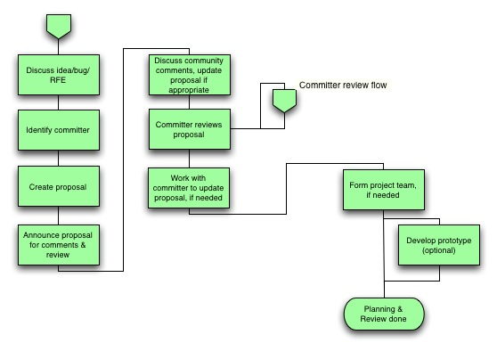

Development Process
The development process is based on a phase model and describes the process for making changes to the code. The phases are described in the following sections.
Contents
Process Overview
The development process is based on a phase model that defines the phases shown in the following figure.

The phases are listed across the top. The roles of actors are listed on the left. White boxes are mandatory steps. Green boxes are optional phases and steps that are recommended as best practices.
The development process boundary is shown by the dotted yellow line. This sequence of phases describes how a contribution moves through the process from an idea or concept to commitment into the repository. It also how the actors participate throughout the process. The sequence repeats for each contribution until a release is created.
The development process is part of a larger life cycle and release process that is outside the scope of this document. See the life cycle document <link to life cycle document > for more information.
The Role of the Committer
Only participants with the role of committer have write access to the project repository. Committers play a key role in the development and contribution process. Committers are typically senior developers with the following responsibilities and tasks:
- Ensures the quality and completeness of their contributions.
- Ensures the quality and completeness of contributions from contributors with whom they are working.
- Ensures that all mandatory process steps are followed.
- Determines which optional process steps are followed.
- Ensures that all stakeholders are appropriately involved.
- Ensures that legal and licensing aspects are verified.
- Commits contributions to the project repository.
- Helps contributors navigate the process and if necessary, acts as the interface to other participants in the process.
Navigating the Process
While the development process might look complex with its multiple phases and actors, it is important to remember that the many optional phases and steps are merely best practice recommendations. The committer makes decisions based on the contribution and the situation. The process scales as needed.
In everyday development work and the majority of contribution cases, you only use as much process as you think you need for your particular contribution. For example, for small or quick fixes, the process collapses to only a few steps and therefore is sufficiently lightweight.
Because the committer is deeply involved with the project and has experience with the development and contribution process, it is easier for new members to contribute. The committer navigates and scales the process for the contributor until such time as the contributor is proficient enough to navigate the process on his or her own.
Phases
This section describes the phases of the development process.
- Idea or Concept
The Idea or Concept phase is the beginning of the cycle. In this phase, ideas and requirements are discussed and collected. The output of this phase is a set of requirements or high-level definitions of features that feed into the next phase.
The entire community can participate in this phase.
This phase is optional. Following it is considered a best practice for changes or new code that would benefit from an idea or concept phase. For contributions that are well-defined, this phase can be skipped.
- Planning and Review
The Planning and Review phase takes the set of requirements and features as input. In this phase, the requirements and features are refined, planned in more detail with respect to items such as functionality, resources, and schedule, and reviewed. The output of this phase is a planning document that feeds into the next phase.
The main actor in this phase is the contributor. If a committer has been identified, the committer also participates.
This phase is optional. Following it is considered a best practice for changes or new code that would benefit from a planning phase. For contributions that require not planning or review, this phase can be skipped.
- Design and Review
The Design and Review phase takes the planning document as input. In this phase, a detailed design is created and reviewed. The output of this phase is a design document or specification that feeds into the next phase.
The main actors in this phase are the contributor and the committer. Others are welcome to comment and participate.
This phase is optional. Following it is considered a best practice for changes or new code that would benefit from a design phase. For contributions that require no design, specification, or review, this phase can be skipped.
- Implement and Test
The Implement and Test phase takes the design or specification document as input. In this phase, the code is implemented, unit and feature tests are implemented, and the code is tested. The output of this phase is tests and tested code that feeds into the next phase.
The main actor in this phase is the contributor. The committer advises the contributor if needed.
This phase is mandatory. However, some steps in this phase are option for small or trivial contributions.
- Integration and System Test
The Integration and System Test phase takes the tests and code as input. In this phase, the code is integrated with the larger system, integration and system tests are possibly implemented, and the code is tested in the system environment. The output of this phase is tests and tested and integrated code that feeds into the next phase.
The main actor for this phase is the contributor. The committer advises the contributor, if needed.
This phase is mandatory. However, some steps in this phase are optional for small or trivial contributions.
- Implementation and Documentation Review
The Implementation and Documentation Review phase takes the completed code, tests, and documentation as input. In this phase, the code, tests, and documentation are reviewed to ensure that they meet the requirements for being committed to the repository. The output of this phase is the code review results and the complete and tested contribution. At the end of this phase, the contribution, if approved, is committed to the repository by the committer.
The main actors in this phase are the contributor and the committer. Others are welcome to comment and participate. However, the committer is responsible for the changes to the repository and for assuring that the contribution meets all applicable technical and process requirements.
This phase is mandatory. However, some steps in this phase are optional for small or trivial contributions.
- Release
The Release phase takes the sum of past commitments to the repository as input and creates and tests a release according to defined release criteria and a release schedule. The output is a release of the repository.
The main actors are QA management and the release manager.
This phase is part of the larger life cycle and release process that is outside the scope of this document.
- Maintenance
The Maintenance phase means that there might be a period of time after the release where maintenance of the code might be necessary. Maintenance work follows the same model as regular development.
The main actor is the contributor.
This phase is optional. It is part of the larger life cycle and release process that is outside the scope of this document.
Detailed Phase Flows
The first six phases are within the scope of this document. Each phase has a flow associated with it that shows the steps involved in moving through the phase. The phases and steps, together with the input and output of each phase, define how a contribution moves from the initial idea through to the commitment into the repository.
Follow these principles when applying the process:
- The committer is responsible for the quality of the contribution and ensures that all mandatory phases and steps are followed.
- The committer discusses with or advises the contributor on which optional phases and steps to follow for a given contribution and situation.
Optional phases and steps should be chosen in a way that benefits the contribution or improves the flow of a given contribution through the community.
In the following phase and flow descriptions, white boxes indicate mandatory steps and green boxes indicate optional phases and steps, which can be considered as best practices.
1. Idea or Concept Phase and Flow
This phase is optional and all steps in the flow are also optional. A contributor can follow this flow as a best practice for changes or new features that would benefit from and idea or concept phase, such as the following situations:
- Non-trivial updates to existing CRs or RFEs
- Filing of new CRs or RFEs
- Other updates that benefit from being discussed with the CR or RFE owner or community

2. Planning and Review Phase and Flow
This phase is optional and all steps in the flow are also optional. A contributor can follow this flow as a best practice for changes or new features that would benefit from a planning review phase, such as the following situations:
- Likely to require substantial effort or having a schedule impact
- Benefit from discussion and agreement from members of the community
- Design phase is anticipated
- Large scope, visibility, and impact on modules, stakeholders, other projects, or architectural decisions

3. Design and Review Phase and Flow
This phase is optional and all steps in the flow are also optional. A contributor can follow this flow as a best practice for changes or new features that would benefit from a design and review phase, such as the following situations:
- Non-trivial technical details or changes to a previous design
- Benefit from discussion and agreement from members of the community
- Large scope, visibility, and impact on modules, stakeholders, other projects, or architectural decisions

4. Implement and Test Phase and Flow
This phase is mandatory for all changes and new features. The three optional steps can be followed if more than unit testing is advisable.

5. Integration and System Test Phase and Flow
This phase is mandatory for all changes and new features. Standard configurations must never be broken or regressed. The optional step can be followed if the contributor is unsure of the required build configurations and tests.

6. Implementation and Documentation Review Phase and Flow
This phase is mandatory for all changes and new features. It includes committing the contribution at the end of the phase. The committer is responsible for adhering to the committer review flow. The green step can be followed if an integration plan exists and the code is committed incrementally.
Step 3 is the actual submission step.

In Step 2, the following Pre-Commit Checklist is verified:
- Committer is identified. Additional reviewers are identified, if needed.
- Local repository is up to date.
- All required configurations build
- All required integration and system tests pass.
- Change description template is filled in.
- Code review data is generated.
- Change package is generated.
Committer Review Flow
The committer review flow is a flow that applies only to committers. Because the committer is responsible for the quality and completeness of the contribution, the committer needs to ensure that certain legal aspects have been verified and that all appropriate stakeholders have been involved. The committer review flow guides the committer in performing these checks.
The review is optional in Phase 2 and Phase 3, but mandatory in Phase 6 before any contribution is committed.
For simple localized contributions from a contributor who is known to have signed the Sun Contributor Agreement, the flow is easy to complete. For complex contributions or contributions with unknown legal or licensing ramifications, the flow might require significant work to complete.